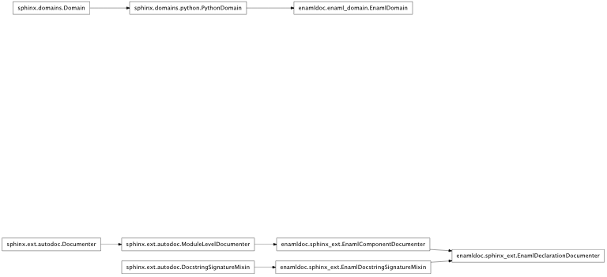

This section describes a set of guidelines for the developers of the Enaml.
Note
The content of this section is currently under discussion and the guidelines are only suggestions.
A Sphinx extension, found in enamldoc.sphinx_ext lets Sphinx recognize and document Enaml objects.
For Enaml declarations. It will format similarly to a function, but with the base object in the place arguments.
Automatically generate the object description from an Enaml file. Specify the object to document as though you were importing it.
ErrorField changes background color when the error state is True.
For Enaml defn statements. Arguments display as with functions.
Automatically generate the object description from an Enaml file. Specify the object to describe as though you were importing it.
automodule works for Enaml files as it does for python modules. No special syntax is necessary.
Use the enaml_comp role to create a cross-reference to a previously described enaml_decl or enaml_defn
Including the Sphinx extension refactor_doc allows use of formatted docstrings as described below.
A Sphinx extension enamldoc lets Sphinx recognize and document Enaml objects.
Automatically insert docstrings for enaml built-in and derived widgets and components, mirroring and borrowing heavily from the autodoc extension. Enaml widgets and components are Python objects that are imported in the enaml.imports() context
Bases: sphinx.ext.autodoc.ModuleLevelDocumenter
Enaml component documenter class
The main purpose of this class is to be distinct from Python components and change the domain in the Documenter instance to ‘enaml’
Need to override the parent __init__ so that we can set self.domain, which is an instance variable.
For Enaml objects, the module name returned by self.object.__module__ points to the enaml parsing compiler, rather than the logical module name stored in self.modname. Therefore, this check will verify that the module points to enaml.parsing.enaml_compiler.
Note - after a fix to correct the .__module__ and .__file__ attributes, this method will not be necessary and will need to be deleted.
Bases: sphinx.ext.autodoc.DocstringSignatureMixin
Mixin for FunctionDocumenter and MethodDocumenter to provide the feature of reading the signature from the docstring.
identical to the autodoc.DocstringSignatureMixin it subclasses and included here as an indicator of a possible future avenue for working with docstring signatures in enaml – possibly to replace refactordoc.
Bases: enamldoc.sphinx_ext.EnamlDocstringSignatureMixin, enamldoc.sphinx_ext.EnamlComponentDocumenter
Specialized Documenter subclass for Enaml declarations.
Bases: sphinx.ext.autodoc.ModuleDocumenter
Subclass of the module documenter for enaml autodocumenting.
The main purpose of the subclass is to set the domain so that member directives are formed properly.
Register a new Documenter.
This autodoc function is overridden here solely for the sake of the proper error message.

Including the Sphinx extension refactordoc allows use of formatted docstrings as described below.
For Sphinx source, please use 4 spaces for indention and a UTF-8 encoding. The line length is preferred to be between 72-74 characters.
Due to the magic under the hood of the traits objects, automatically extracting documentation from the source with the standard autodoc tools is a little tricky. Enaml’s Sphinx source should therefore use the following conventions:
- When documenting classes with Traits the sphinx directive .. autoattribute:: does not work. To document single attributes use the (undocumented) .. autoattributeinstance:: directive instead.
- The ..autoclass:: directive works fine as long as specific members are not specified in the :members: context parameter.
The coding style follows the PEP 8 guidelines and uses 4 spaces for indention. The maximum line length is 80 characters; however, the documentation is preferred to be between 72-74 characters.
The preamble of each file contains copyright notice. The following example can be used as a template
#------------------------------------------------------------------------------
# Copyright (c) 2011, Enthought, Inc.
# All rights reserved.
#------------------------------------------------------------------------------
The current documentation uses the autodoc extension of the Sphinx distribution. The autodoc parsing is also extended to convert heading-based docstring descriptions to standard reStructedText role directives.
In order to create autodoc-friendly docstrings for classes that inherit from traits.HasTraits, please consider the following:
Avoid placing headings (except those that are described below) in the multi-line docstrings since they are not rendered properly by Sphinx.
Document the class attributes using one or multiple lines commented with #: before (i.e. above) the attribute definition. These will be picked up by the autodoc commands and used as the docstring for the following value:
<other code> # this comment will not appear since it lacks the ':' #: The file name of the .qbc file to load filename = FileAlternative you can document the attributes at the main class using the Attribute heading. The current autodoc extension supports the following headings for classes:
Heading
Description
Methods
Class methods
Attributes
Set of attributes
Notes
Useful notes (one paragraph)
See Also
References
For example, the Python code
#------------------------------------------------------------------------------
# Copyright (c) 2011, Enthought, Inc.
# All rights reserved.
#------------------------------------------------------------------------------
from traits.api import HasTraits, Float
class Myclass(HasTraits):
""" This is a example class
It is used to demonstrate the proposed guidelines for documenting traits
based classes in an "sphinx-friendly" way.
The traits are documented close to their definition by using a special
comment ``#:`` prefix.
"""
#: The x Float trait (default = 150.0)
x = Float(150.0)
# This is a comment autodoc ignores it
#: The y Float trait (default = 0.0)
y = Float(0.0)
class Otherclass(HasTraits):
""" This is another example class using traits
It is used to demonstrate the alternative method for documenting traits
based classes in an "sphinx-friendly" way.
The traits are documented at the start of the class definition.
Attributes
----------
x : Float, default = 150.0
The x Float trait
y : Float, default = 150.0
The y Float trait
"""
x = Float(150.0)
# This is a comment autodoc ignores it
y = Float(0.0)
leads to this Sphinx output (using ..autoclass::):
Bases: traits.has_traits.HasTraits
This is a example class
It is used to demonstrate the proposed guidelines for documenting traits based classes in an “sphinx-friendly” way.
The traits are documented close to their definition by using a special comment #: prefix.
alias of __NoInterface__
Bases: traits.has_traits.HasTraits
This is another example class using traits
It is used to demonstrate the alternative method for documenting traits based classes in an “sphinx-friendly” way.
The traits are documented at the start of the class definition.
The x Float trait
The y Float trait
alias of __NoInterface__
In order to create autodoc-friendly docstrings for functions, please consider the following:
The current parser extension supports the following headings for functions:
Heading
Description
Arguments
Set of function arguments and their usage
Returns
Return values of the function
Raises
Errors and the cases in which they are raised
Yields
Successive results of the generator
Each section/heading can accept items with one of the following structures (spaces around : are important):
<heading> --------- <name> : <type> <description> <name> : <type> <description> <name> : <description> <heading> --------- <description>The last form is useful when a paragraph is more appropriate than a an item list.
Empty headings are removed and do not appear in the sphinx documentation
Note
The use of the headings is optional. The developer can use directly the rst role directives to format the docstrings. However, using the headings, the dosctring is also readable in interactive python sessions.
"""Extract the fields from the docstring
Parse the fields into tuples of name, type and description in a
list of strings. The strings are also removed from the list.
Arguments
---------
indent : str, optional
the indent argument is used to make sure that only the lines
with the same indent are considered when checking for a
field header line. The value is used to define the field
checking function.
field_check : function
Optional function to use for checking if the next line is a
field. The signature of the function is ``foo(line)`` and it
should return ``True`` if the line contains a valid field
The default function is checking for fields of the following
formats::
<name> : <type>
or::
<name> :
Where the name has to be one word.
Returns
-------
parameters : list of tuples
list of parsed parameter tuples as returned from the
:meth:`~BaseDocstring.parse_field` method.
"""
Extract the fields from the docstring
Parse the fields into tuples of name, type and description in a list of strings. The strings are also removed from the list.
| Parameters: |
|
|---|---|
| Returns: | parameters (list of tuples) – list of parsed parameter tuples as returned from the parse_field() method. |